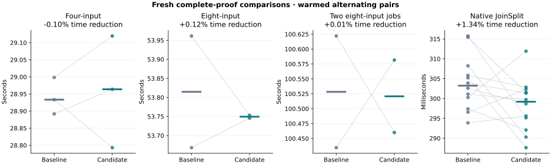
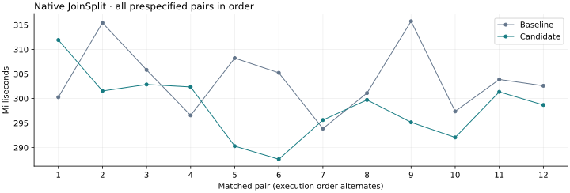

2026-10-22 · Tesla V100-PCIE-32GB · 250 W
GPU prover optimization pass 11
Retain the pass 10 baseline
Retain the pass 10 implementation. Eight-lane S-box scheduling reduced the matched four-input row-hash GPU event sum by 0.330%, but complete aggregation medians changed by -0.105% (four inputs), +0.121% (eight inputs), and +0.007% (two concurrent jobs), with only 3 of 7 aggregate pairs faster. Native JoinSplit improved by 1.335% pooled and 1.135% paired, with 9 of 12 pairs faster; this positive result is retained and does not establish a broad aggregation benefit. Sampled single-job GPU peak increased 428 MiB; four-input peak was unchanged and concurrent peak was 1344 MiB lower. The candidate does not meet the prespecified requirement for broadly consistent complete-proof benefit. All four NTT candidates were rejected after large-transform regressions, and the two smaller S-box schedules were mixed.
The evaluated candidate schedules the eight independent full-round Poseidon2 S-boxes by arithmetic phase. It preserves each lane's additions, four multiplications and operand order, and uses the existing V100 field-arithmetic gate. Partial rounds and portable fallback computations retain their previous ordering.
45 targeted tests passed; 60 independently CPU-audited outputs contain 192 fresh proofs. Required GPU stages, unique proof/root hashes and native public-input tamper checks passed.
Complete-proof timings
All prespecified alternating A/B pairs are included. Positive reductions are faster; negative reductions are slower. Times are seconds.


Resource observations
Sampled qualification peaks, in MiB. Native GPU samples can miss short allocations. The code adds no allocations or launch changes.
Matched warm profiles
GPU-event sums are nonadditive and separate from proof timers. All eight profiles have zero dropped events and complete submission metadata.
The first native-profile telemetry samples showed different SM clocks: 307 MHz for baseline and 1,380 MHz for candidate. The unchanged NTT path also ran about 10% faster in that diagnostic. All twelve qualification runs per label began at a sampled 135 MHz. These are process-relative samples, not per-kernel clock measurements, so the profile does not isolate the S-box contribution to native latency. No clock settings were changed, and all native qualification samples are retained.
Seven kernel candidates
Four NTT candidates tested unity-twiddle elimination, two-stage load fusion, fourth-root shifts, and a radix-4 rearrangement. All 200 integer-NTT oracle configurations passed, including direct-DFT cross-checks, full-width inputs, partial columns and fallback paths. Twenty-six transform configurations used eight alternating GPU-event samples after warmup. Large-transform regressions prevented these candidates from advancing.
Three hash candidates interleaved groups of two, four or eight S-boxes. Each passed 266,369 arithmetic input pairs, 577 independent integer Poseidon2 states and full-output comparisons on six hash workloads. Twelve alternating event samples per workload exposed a small initial gain for eight-lane scheduling.
Prospective hash confirmation
Before more timings, a fixed 24-pair comparison was recorded for baseline versus eight-lane scheduling. The original screen remains intact. Five workloads improved and the smallest tied; only this candidate advanced to complete proofs.
Correctness and source identity
The candidate changes only src/gpu.rs relative to the retained pass 10 source. Four fallback macro configurations preprocess token-identically. All 691 source pins match the frozen candidate release and tests; the working tree matches the final selection. CPU-only and GPU-without-tuning feature checks passed. No verifier, field modulus, round count, proof parameter or randomness changes were made.
Timing boundaries
- Four-input aggregation: Aggregation plus GPU drain; excludes initialization, output writing and CPU audit.
- Eight-input aggregation: Worker launch through exit, including initialization, admission barrier, proof work, output and shutdown; excludes independent CPU audit.
- Two concurrent eight-input jobs: Cohort launch through the last of two worker exits; same boundary as single-worker runs.
- Native JoinSplit: Native ABI proof call plus GPU drain; excludes initialization, buffer setup, output and CPU audit.
Every matched proof timing
Limits and first use
- One Tesla V100-PCIE-32GB, fixed 250 W power limit; no clocks or power settings changed.
- Three four-input, two eight-input, two concurrent and twelve native matched pairs; small sample counts limit precision.
- First-use compilation, warmups and profiling runs are retained separately and excluded from qualification medians.
- Kernel screens measure GPU events, not complete-prover latency. Candidate selection uses the complete-proof comparisons.
- GPU-event sums and inclusive host spans are nonadditive. Uncovered intervals are not measured GPU idle time.
- Sampled native VRAM peaks may miss short allocations; zero sampled usage is not zero actual use.
- No cold-cache, other-GPU, Apple, full-block or production qualification claim.
Rebuildable NVIDIA and Rust incremental caches were cleared before baseline runs to recover disk space. The first profiled baseline four-input run included 72.440 seconds in the inclusive specialized-compilation host span. Profiling and ordinary execution use distinct program variants, so each receives a warmup. The four-input first-use runs below are retained and excluded from steady-state medians. No compiler caches were cleared during comparisons.
References and reproducibility
The references motivated experiments; measured correctness and performance determined the final selection.
- Goldilocks NTT Trick — Tomer Solberg / Ingonyama: Motivated fourth-root shift and radix-4 NTT experiments. Actual forward and inverse roots were checked explicitly; correctness passed, but large transforms regressed.
- NVIDIA Volta Tuning Guide: Motivated experiments exposing independent arithmetic and checking synchronization and register-pressure tradeoffs. Applying these CUDA architecture observations to OpenCL is an inference; timings establish the result.
Structured evidence · Candidate patch · Integrity manifest